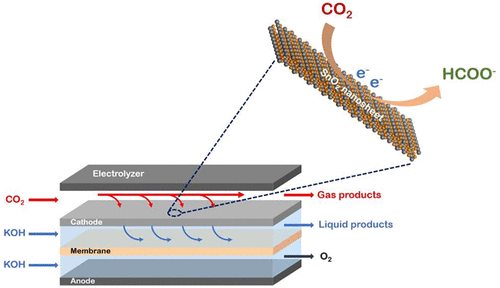

2020
- H. -Y. Zhuo, X. Yu, Q. Yu, H. Xiao*, X. Zhang*, J. Li*
- Selective hydrogenation of acetylene on graphene-supported non-noble metal single-atom catalysts
- Science China Materials 2020, 63, 1741-1749

- J. Wan D. Liu, H. Xiao*, H. Rong*, S. Guan, F. Xie, D. Wang*, Y. Li
- Facet Engineering in Metal Organic Frameworks to Improve Their Electrochemical Activity for Water Oxidation
- Chemical Communications 2020, 56, 4316-4319
- J. Li, J. Jiao*, H. Zhang, P. Zhu, H. Ma, C. Chen, H. Xiao*, Q. Lu*
- Two-Dimensional SnO2 Nanosheets for Efficient Carbon Dioxide Electroreduction to Formate
- ACS Sustainable Chemistry & Engineering 2020, 8, 4975-4982

- J. -C. Liu, H. Xiao*, J. Li*
- Constructing High-Loading Single-Atom/Cluster Catalysts via an Electrochemical Potential Window Strategy
- Journal of the American Chemical Society 2020, 142, 3375-3383

- K. Cai, Y. Shi, C. Cao&, S. Vemuri, B. Cui, D. Shen, H. Wu, L. Zhang, Y. Qiu, H. Chen, Y. Jiao, C. L. Stern, F. M. Alsubaie, H. Xiao*, J. Li, J. F. Stoddart*
- Tuning radical interactions in trisradical tricationic complexes by varying host-cavity sizes
- Chemical Science 2020, 11, 2861-2861
- H. Xu, S. Xi, J. Li, S. Liu, P. Lyu, W. Yu, Tao Sun, D. -C. Qi, Q. He, H. Xiao, M. Lin, J. Wu*, J. Zhang*, J. Lu*
- Chemical design and synthesis of superior single-atom electrocatalysts via in situ polymerization
- Journal of Materials Chemistry A 2020, 8, 17683-17690

- H. Fan, Z. Zheng, L. Zhao, W. Li, J. Wang, M. Dai, Y. Zhao, J. Xiao, G. Wang, X. Ding, H. Xiao, J. Li, Y. Wu*, Y. Zhang*
- Extending Cycle Life of Mg/S Battery by Activation of Mg Anode/Electrolyte Interface through an LiCl‐Assisted MgCl2 Solubilization Mechanism
- Advanced Functional Materials 2020, 30, 1909370
- Y. Ye, J. Qian, H. Yang, H. Su, K. -J. Lee, A. Etxebarria, T. Cheng, H. Xiao, J. Yano*, W. A. Goddard III*, E. J. Crumling*
- Synergy between a Silver–Copper Surface Alloy Composition and Carbon Dioxide Adsorption and Activation
- ACS Applied Materials & Interfaces 2020, 12, 25374-25382

- Y. Liu, J. -C. Liu, T. -H. Li, Z. -H. Duan, T. -Y. Zhang, M. Yan, W. -L. Li, H. Xiao, Y. -G. Wang, C. -R. Chang*, J. Li*
- Unravelling the Enigma of Nonoxidative Conversion of Methane on Iron Single‐Atom Catalysts
- Angewandte Chemie International Edition 2020, 59, 18586-18590

- H. -Y. Zhuo, X. Zhang, J. -X. Liang, Q. Yu, H. Xiao, J. Li*
- Theoretical Understandings of Graphene-based Metal Single-Atom Catalysts: Stability and Catalytic Performance
- Chemical Reviews 2020, 120, 12315-12341

- X. Li, C. -S. Cao, S. -F. Hung, Y. -R. Lu, W. Cai, A. I. Rykov, S. Miao, S. Xi, H. Yang, Z. Hu, J. Wang, J. Zhao, E. E. Alp, W. Xu, T. -S. Chan, H. Chen, Q. Xiong, H. Xiao, Y. Huang*, J. Li*, T. Zhang, B. Liu*
- Identification of the Electronic and Structural Dynamics of Catalytic Centers in Single-Fe-Atom Material
- Chem 2020, 6, 440-3454